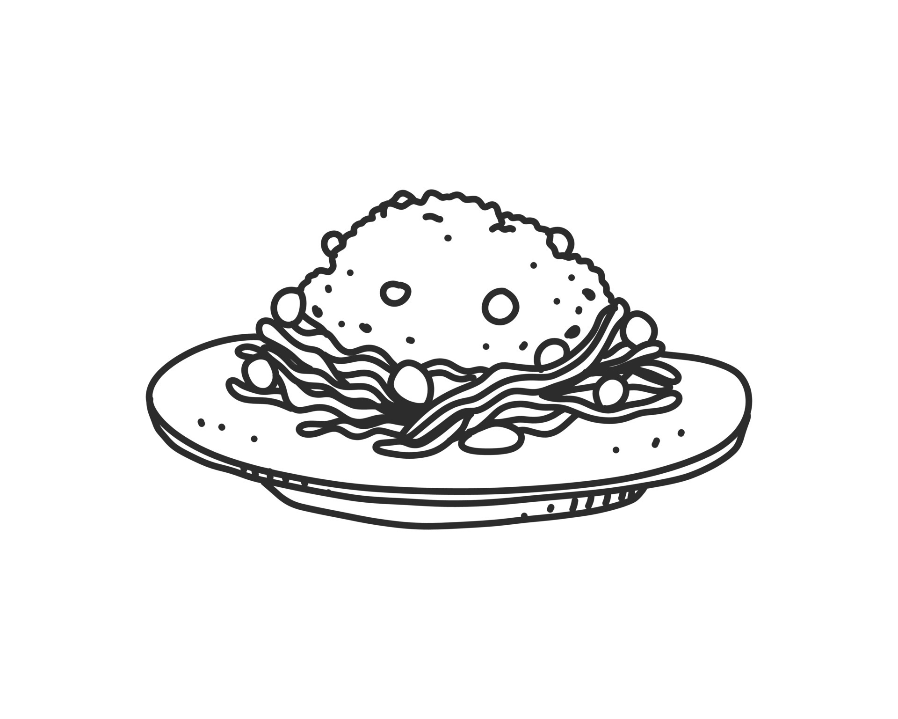

Shrimp Fried RiceA shrimp fried this rice

Ingredients
- 1lb Shrimp uncooked
- 1 Tsp cornstarch
- 3 Tbsp Vegetable Oil
- 4 Large Eggs
- 0.25 Cups Green Onion finely chopped
- 5 Cups Leftover White Rice
- 12 Oz Frozen Carrots and Peas
- 2 Tbsp Soysauce
- 1.5 Tsp Sesame Oil
Directions
- Add shrimp, cornstarch, salt, and pepper to marinate 10 minutes
- Cook shrimp for 1 minute each side until cooked
- Beat eggs into different skillet on medium heat
- Stir in rice
- Place in soysauce and sesame oil
- Add shrimp and frozen peas/carrots
- Cool for 10 minutes and serve